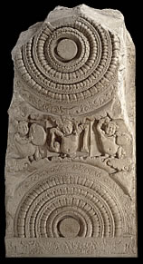

Outer pillarPillars were carved from large single slabs of stone. Each pillar was about 2.6 metres high and 0.85 metres wide. This pillar would originally have had another lotus at the top, as on the other pillar shown. Click on the pillar to explore |